Hasetal Destillerie GmbH
As the original names could not be shared due to data privacy, similar data and orders were generated using artificial intelligence. These works are for portfolio purposes only. In many cases, customer data is generated with the support of artificial intelligence.
Section 1. Problem Statement
Client: Hasetal Destillerie GmbH
Research conducted: September 2026
Analys: Product & Business Analys
Request for analysis of portfolio performance and channel strategy.
About the company:
Hasetal Distillery is a small craft distillery near Osnabrück, founded in 2018 as a family business. With an annual production of ~8,000 cases, it operates mainly in the regions of Lower Saxony and North Rhine-Westphalia. Product line: the flagship Dry Gin, a seasonal Sloe Gin, traditional Obstbrand (fruit brandy for a more mature clientele), and an alcoholfree botanical range launched in early 2025.
Situation:
Over the past two years (2024–2025), our sales figures have been mixed. The number of accounts in the Fachhandel (retail via distributors) and Gastronomie (bar/restaurant) channels is decreasing, and some of our previous key customers have stopped placing orders. At the same time, our Hofladen (our shop) and online DTC sales are relatively stable or growing. Our new non-alcoholic range is growing faster than we expected, but it still accounts for only a small part of the business.As management, we need to make a decision for the 2026 budget planning: where should we direct our limited resources (marketing, sales team, production capacity)?
Company order:
- Diagnosis: Based on the data, what is the true trend in our sales performance? Which channel/product combinations are growing, which are declining, and why (with a logical explanation derived from the data)?
- Risk analysis: Which of our distributor/gastronomy accounts show a "churn risk"? What percentage of our overall distribution problem (competition with major brands) does this account for?
- Non-alcoholic line decision: Based on visitor survey data, is there a sound case for increasing investment in the non-alcoholic botanical line? Which demographic segment should be targeted?
- Recommendation: 3 specific, prioritised recommendations for 2026 (channel strategy, account management, product portfolio), each explained with supporting data.
The data presented:
3 files: master file, monthly sales (product by channel), account-level order history (last 6 months), visitor/customer survey (180 respondents).
The aforementioned files and new data files processed and created from them can be found in the GitHub repository at the following link:
github.com/Elli55/Case_Study_Hasetal_Destillerie_GmbHTo see how the data is processed, you can visit the following Kaggle link:
www.kaggle.com/code/lrhmanelliverdiyev/case-notebook-hasetal-brennereiSection 2. Sale
Official statistics
Analysis of official statistics has yielded interesting results. For example, over the past five years the number of Distilleries in the environment up to 2025 has fallen by 25.1 per cent. However, another factor makes this data even more interesting. Because in the Distilleries that have ceased trading category, to which the client also belongs, a 2.6 per cent increase has been recorded. Overall, although the trend for this type of Distillery is somewhat fluctuating, the increase is evident. Upon closer inspection, one of the main reasons for the closure of small distilleries is that they are often family businesses, and the younger generation is unwilling to continue the trade. This trend itself highlights the difficulty of competing with large-scale brands, a concern that is also shared by the client.
The official source used to obtain this information:
www.destatis.de/DE/Themen/Staat/Steuern/Verbrauchsteuern/Publikationen/Downloads-Verbrauchsteuern/statistischer-bericht-alkoholsteuerstatistik-5734401257005.xlsxPresentation of sales charts
Two graphs of sales from 01.2024 to 12.2025
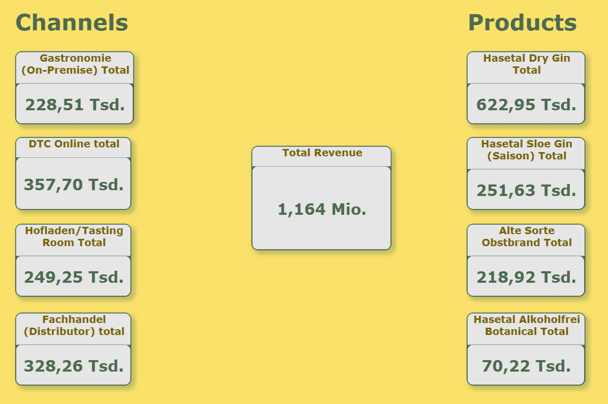
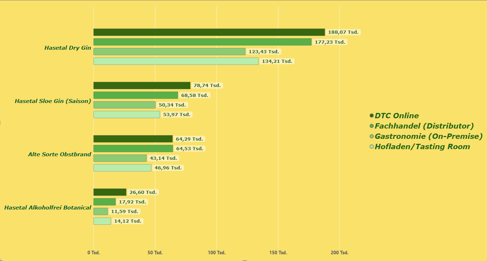
A total profit of 188.7 thousand was generated solely through the online channel with the Hasetal Dry Gin product. Overall, online sales hold an overwhelming advantage across all products. Further analyses will also show that for gastronomy and distributors, there are sometimes months with zero orders.
If we look at the matter from the perspective of marketing with somewhat limited resources, in both gastronomy and distribution there is a third party in direct contact with the customer. This weakens our role in the game. However, online sales provide direct communication with us and create a market that can be managed with fewer resources, and it consistently shows strong figures. Even for a newly launched alcoholic product, online sales still hold the advantage.
Client divided the distributors into three categories: Category A, i.e. 'Account'; Category B, i.e. 'Regular'; and Category C, i.e. 'Occasional'. This division was determined primarily by the ordering frequency and quantity of the disturbers.
Important facts:
Category A distributors have never received zero order intake.
Total of 34 times 0 new orders recorded
A total of 42 distributors were worked with.
I am analysing the data up to 30th June 2023. This is because this represents a list of the 30 oldest customers, and the client is concerned about losing these long-standing clients. Orders have been received from a total of 30 distributors. Of these, 6 are in category A, 10 are in category B, and 14 are in category C.
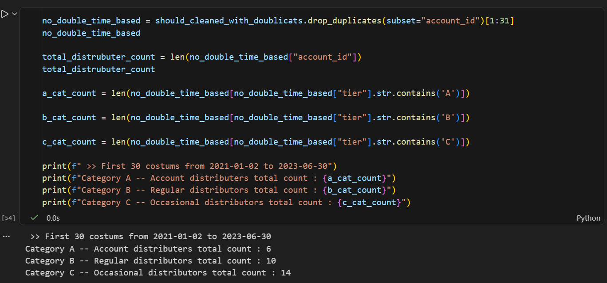
And, as a direct result, we can look at the following data to compile the list of the first 30 unique order-givers. If we look closely, we cannot find a Category A distributor here.
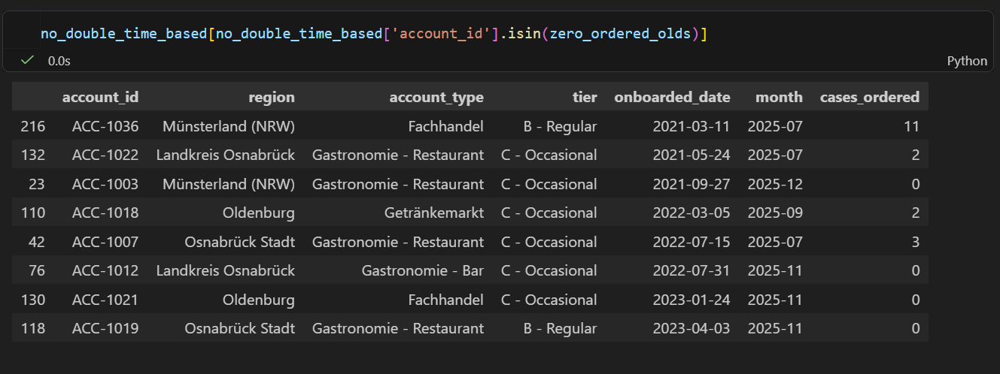
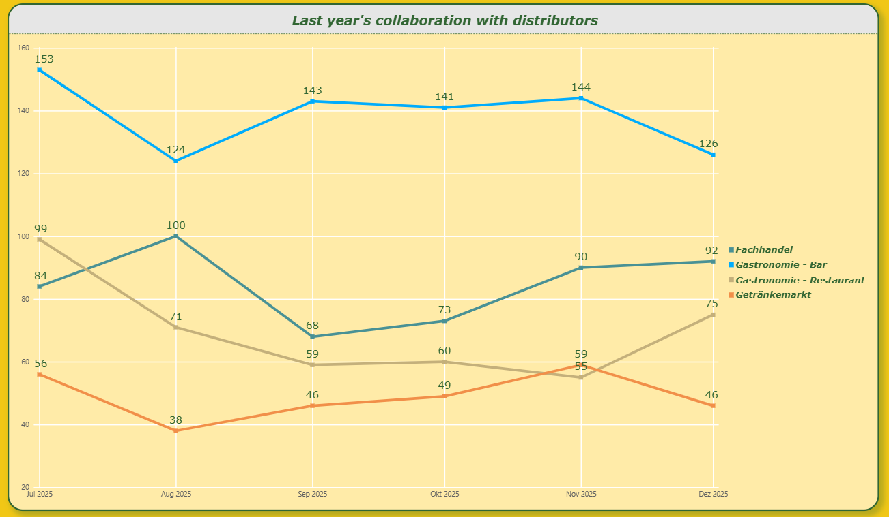
We are actually not many anomalies in these trends. The main increase around Christmas Eve and the subsequent sharp drops are the usual trends for this sector. The drop in orders from bars around Christmas and the sharp rise in orders from restaurants is a trend worth noting. At the same time, there is also an increase in orders from restaurants during the summer months.
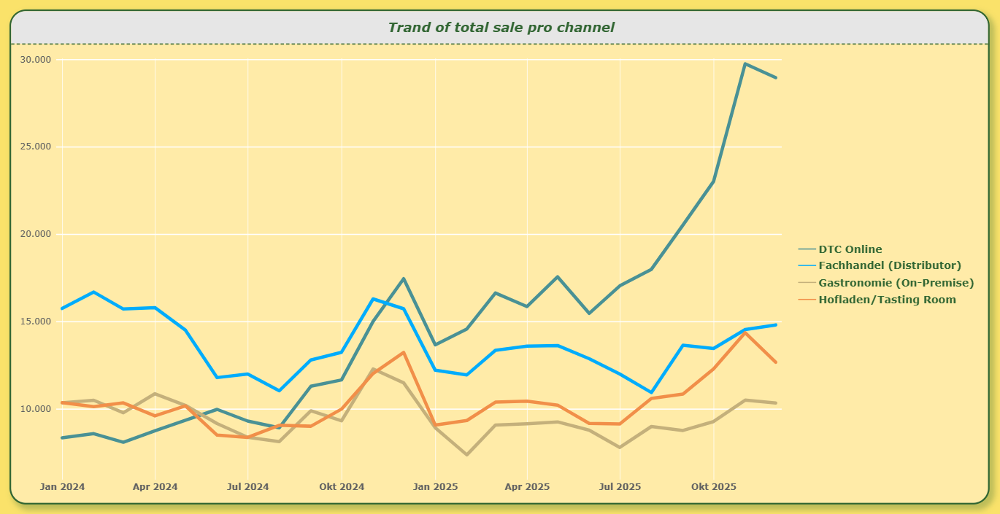
The advantage of online sales here is undeniable. We can also see the trend we identified earlier, related to the Christmas period, very clearly here. This allows us to form an idea. Sales at 'Hofladen', or direct sales from our own premises, also show a sharp increase during the same period. It is clear that our resources are limited, and we must use them efficiently for marketing. This brings to mind a potential outlier in this trend. As it is in our own backyard, it is possible to run certain marketing campaigns, events, and potential activities with very minimal resources. As the graph also suggests, doing this in the run-up to Christmas could double its effectiveness.
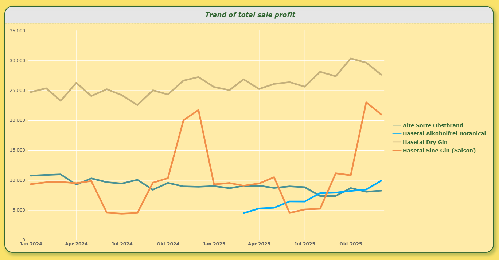
The graph clearly shows that the Gin product continues to sell with very little fluctuation in its flow. The non-alcoholic drink, however, has been on an upward trajectory since its launch, and if it is possible to maintain the same trend over the next two years, it will become a direct competitor to other drinks. For the seasonal product, Slaoe Gin, the company is both a less resource-intensive and a guaranteed sales channel. Obstrbrand, on the other hand, has a timing that will coincide with another idea. The graph shows that Obstrbrand experiences a sales increase every Christmas Eve. We touched on this earlier, mentioning that we should dedicate resources to selling through the Hofladen during the same period.
Section 3. Conducted surveys
To make a more informed decision about the products, the client conducted a short survey of their customers. The main questions were as follows:
age_group: We are asking which age group they belong to.
discovery_channel: We are specifying the channel through which they discovered the product.
preferred_purchase_channel: We learn which channel they prefer.
alcohol_consumption_change_12m: Change in alcohol consumption over the last 12 months.
interest_in_alkoholfrei_line: Interest in the alcohol-free product is measured.
nps_score_0_10: Answer on a scale of 1 to 10 to the question: 'Would they recommend our product to others?'
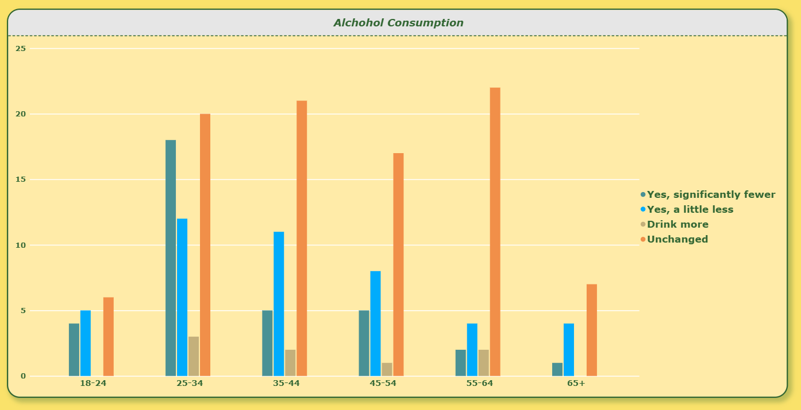
There are many people who say that nothing has changed in any case. However, a decline is also evident among younger people. Meanwhile, the number of those who drink more is virtually non-existent. This is further proof to allocate existing resources to this alcohol-free product.
I conducted an analysis like this. In the survey data, I divided the question asking which channel they discovered the product through into three main categories based on psychological engagement with the product. There were six possible answers the user could give regarding how they discovered it. They were as follows.
'Instagram/Social Media', 'Wochenmarkt/Event', 'Empfehlung (Word of Mouth)', 'Google-Suche', 'Sonstiges', 'Fachhandel-Regal'
I have divided these into 3 main groups.
'Google-Suche','Instagram/Social Media' - 'online'
'Empfehlung (Word of Mouth)', 'Sonstiges' - 'heard'
'Wochenmarkt/Event', 'Fachhandel-Regal' - 'physical contact'
I then summarised their answers to the question 'and would they then advise someone else?' across these three categories and found the average score for each category. The result is below.
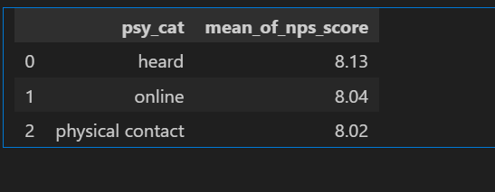
Interestingly, although the difference isn't very large, there is a preference in the scores given by those who have heard of it. However, as this advantage isn't by a very large margin, I don't think it's right to draw a conclusion from this. Let's move on. I'm coming across another interesting point here; I've just performed another analysis on these 3 categories we prepared, and this time I grouped them by the purchase channels the customer prefers. The result:
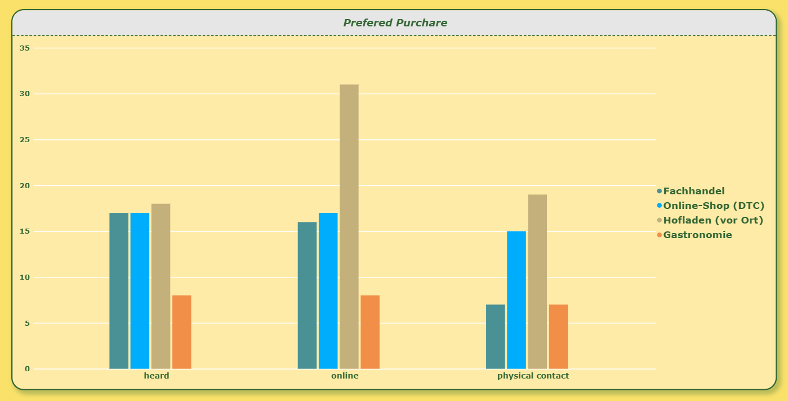
What we see here is a stark difference: customers who discover our product online are very keen to visit the Hofladen directly. As I mentioned above, I had recommended focusing on the online channel as an insurance policy for limited resources, and pushing forward with the Hofladen, which requires fewer marketing resources. We are now seeing, however, that it is even possible to combine the two, because people are interested in it. It's an interesting finding for the marketing team. Earlier, I recommended allocating resources to two products: one seasonal product and one non-alcoholic product. But how can we get the best return from the resources spent on this non-alcoholic product?
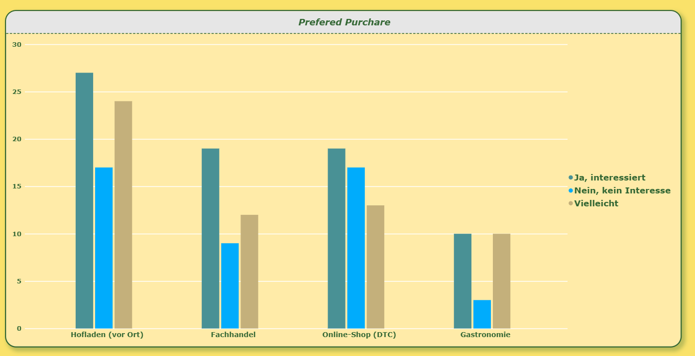
Here we again confirm that our resources are limited, that online is a highly efficient and promising marketing channel, and that user interest in alcohol-free drinks is low. Let's not be too hasty in our disappointment, because we had chosen Hofladen as our secondary channel to invest resources in, and here there is a truly marked advantage. A significantly larger proportion of those who visit Hofladen are interested in non-alcoholic drinks. This means that there is a synergistic relationship between the marketing channel we are investing in and the products we are investing in.